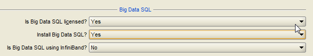

10 Installing the Oracle Big Data Appliance Software
This chapter explains how to install, reinstall, and reconfigure the software on Oracle Big Data Appliance. It contains these sections:
Note:
If you did not enter the required passwords in the Oracle Big Data Appliance Configuration Generation Utility, then you are prompted to enter them during the software installation. Ensure that you know the current passwords for the operating system root and oracle users, the Cloudera Manager admin user, and the MySQL administrator. If you are installing or reinstalling Oracle Big Data Connectors, then you also need the MySQL password for Oracle Data Integrator.
- About the Mammoth Utility
- Installation Prerequisites
- Downloading the Mammoth Software Deployment Bundle
- Installing the Software on a New Rack
- What If an Error Occurs During the Installation?
- Adding Servers to a Cluster
- Upgrading the Software on Oracle Big Data Appliance
- Enabling Optional Software Included With the Release
- Installing Other Approved Software
In addition to the optional software included with the Oracle Big Data Appliance deployment bundle, there are other applications that are tested and approved for installation on the appliance. - Reinstalling the Base Image
- Installing a One-Off Patch
- Mammoth Software Installation and Configuration Utility
- Oracle Big Data Appliance Base Imaging Utilities
Parent topic: Software Installation and Configuration
10.1 About the Mammoth Utility
Mammoth is a command-line utility for installing and configuring the Oracle Big Data Appliance software. Using Mammoth, you can:
-
Set up a cluster for either CDH or Oracle NoSQL Database.
-
Create a cluster on one or more racks.
-
Create multiple clusters on an Oracle Big Data Appliance rack.
-
Extend a cluster to new servers on the same rack or a new rack.
-
Update a cluster with new software.
10.1.1 About Rolling Upgrades
A rolling upgrade reboots the nodes of a cluster in a sequence that always leaves one node out of three replicas active. This allows the cluster to stay on-line throughout the entire series of reboots. As a result, some (though not all) services of the cluster can remain accessible without interruption during the upgrade.
Rolling upgrades are only available for installations running CDH 4.1 or later.
Because sequential reboots of the nodes in pairs incrementally add time to the process, rolling upgrades take longer than a conventional Mammoth upgrade, in which all servers reboots are concurrent. Estimate an average of 8-10 minutes per pair of non-critical nodes, in addition to 4 minutes each for the Mammoth node and critical nodes (which are rebooted one at a time).
A rolling upgrade can be unattended. The reboot event will “roll” from one server to the next (or next pair) automatically if each server's post-upgrade reboot is successful. If the update detects error or warning conditions during a server reboot, then the process pauses and prompts you to continue.
Reboot of node mnode22bda08 had errors/warnings, do you wish to proceed anyway? [y/n]:-
If you enter
n:The upgrade stops so that you can fix the problems.
When you are ready, resume the installation using
mammoth -p. -
if you enter
y:The upgrade continues.
This prompt is displayed once per node upgrade. If the node has already been rebooted (and the prompt has already been answered) then the upgrade will continue without displaying the prompt again.
When Rolling Upgrades are Possible
A rolling upgrade is an option for the following upgrade tasks described in this document:
For Adding Servers to a Cluster, there is normally no cluster downtime for the process. The only exception is that the first time a single-rack cluster is extended onto a second rack, there will be downtime for the cluster extension (as master roles are moved to the additional rack), but subsequent cluster extensions will not require any downtime.
In cases where rolling upgrade is an option, Mammoth displays the following message on the console and then prompts you to chose whether or not to proceed with the installation as a rolling upgrade:
You can choose a rolling upgrade or continue with a conventional upgrade. Rolling upgrades need a minimum replication factor of three (this is the default in Mammoth) to have full availability during the upgrade. Do you wish to perform a Rolling Upgrade? [y/n]: Note:
If you entery at the prompt to accept a rolling upgrade , the cluster is committed to the process and the upgrade of all nodes in the cluster must continue to completion uninterrupted.
Service Availability During a Rolling Upgrade
In a rolling upgrade, services that are configured to use HDFS High Availability (HDFS HA) can remain continuously available while each node in the cluster is upgraded and rebooted. These include HDFS, YARN, and Zookeeper. Keeping these services available during the upgrade requires a Hadoop replication factor of three or greater. This is because the rolling upgrade restarts nodes in pairs. The upgrade cannot predetermine if the replication factor meets this minimum, since global configuration may have been overwritten for individual files. An insufficient replication factor does not stop the upgrade, but in that case HDFS HA-enabled services may be subject to downtime.
In a rolling upgrade, Cloudera services are restarted in batches of two. This is what sustains access to HDFS and other services during an upgrade. Services that are not or cannot be configured to use HDFS HA may be unavailable during a rolling upgrade, regardless of the replication factor.
Parent topic: About the Mammoth Utility
10.2 Installation Prerequisites
The Oracle Enterprise Manager options require software on a remote server on the same network as Oracle Big Data Appliance. Those installations must be complete before you run Mammoth, or it will fail.
Similarly, you must complete several steps for Kerberos if the key distribution center (KDC) is installed on a remote server. There are no preliminary steps if you install the KDC on Oracle Big Data Appliance.
The following list describes the prerequisites for all installation options.
Auto Service Request Requirements:
-
Your My Oracle Support account is set up.
-
ASR Manager is up and running.
Enterprise Manager Requirements:
-
Oracle Management System (OMS) version 12.1.0.4.0 or higher is up and running.
-
The OMS agent pull URL is working.
-
The OMS
emclidownload URL is working. -
Both the HTTPS upload port and the console port are open.
MIT Kerberos Requirements for a Remote KDC:
-
Add
cloudera-scm/adminas a user to the KDC database by running the following command fromkadmin:addprinc -randkey cloudera-scm/admin@<REALM NAME> -
Grant
cloudera-scm/adminall permissions to the Kerberos database. It must be able to add, modify, remove, and list principals from the database. -
Create the
cmf.keytabfile by running the following command fromkadmin:xst -k cmf.keytab cloudera-scm/admin@<REALM NAME> -
Move
cmf.keytabto/opt/oracle/BDAMammoth. -
To support Oozie and Hue, ensure that the remote KDC supports renewable tickets. If it does not, then follow these steps:
-
Open
kdc.confand set values formax_lifeandmax_renewable_life. Themax_lifeparameter defines the time period when the ticket is valid, and themax_renewable_lifeparameter defines the time period when users can renew a ticket. -
Set
maxrenewlifefor thekrbtgtprincipal. Use the followingkadmincommand, replacing duration with the time period and REALM NAME with the name of the realm:modprinc -maxrenewlife duration krbtgt/REALM NAME
If the KDC does not support renewable tickets when Kerberos is configured, then Oozie and Hue might not work correctly.
-
Active Directory Kerberos Requirements for a Remote KDC
Active Directory Kerberos requirements are documented in MOS (My Oracle Support).
See MOS documents 2013585.1 and 2029378.1.
Parent topic: Installing the Oracle Big Data Appliance Software
10.3 Downloading the Mammoth Software Deployment Bundle
The Mammoth bundle contains the installation files. Before you install the software, you must use Oracle Big Data Appliance Configuration Generation Utility to generate the configuration files, as described in "Generating the Configuration Files."
You use the same bundle for all procedures described in this chapter, regardless of rack size, and whether you are creating CDH or Oracle NoSQL Database clusters, or upgrading existing clusters.
Note:
The Mammoth software deployment bundle no longer includes a copy of the base image ISO. If you need the base image at a later time, you can find the download link in the My Oracle Support note referenced below – Oracle Big Data Appliance Patch Set Master Note (Doc ID 1485745.1)To download the Mammoth bundle:
-
Locate the download site in either My Oracle Support or Automated Release Updates (ARU):
My Oracle Support
-
Log on to My Oracle Support and view Oracle Big Data Appliance Patch Set Master Note (Doc ID 1485745.1)
-
From the list of Mammoth bundles, click the link to the bundle software version for this release.
-
Find the link to the appropriate Mammoth patch bundle in the table.
ARU
-
Connect to ARU.
-
On the Patches page, set Product to Big Data Appliance Integrated Software and Release to the appropriate release number.
-
Click Search.
-
-
Download the BDA Mammoth ZIP files to any directory (such as
/tmp) in the first node of the cluster. Depending on the configuration of the rack, this node can be the first, seventh, or thirteenth server from the bottom of the rack. For multirack clusters, this server is in the primary rack.The patch consists of a set of files labeled as follows:
p<patch_number>_Linux-x86-64_<file number>of<total number of files>.zip -
Log in to the first node of the cluster as
root. -
Extract all files from the all of the downloaded zip files. For example:
$ unzip p<patch_number>_Linux-x86-64_1of4.zip Archive: p<patch_number>_<version>_Linux-x86-64_1of4.zip inflating: README.txt creating: BDAMammoth-ol7-<version>/ ... -
Change to the
BDAMammoth-<version> directory:# cd BDAMammoth-ol7-<version>
-
Extract all files from
BDAMammoth-<version>.run:# ./BDAMammoth-ol7-<version>.run Big Data Appliance Mammoth v<version> Self-extraction Checking for and testing BDA Package in /tmp Removing existing temporary files Generating /tmp/BDAMammoth.tar Verifying MD5 sum of /tmp/BDAMammoth.tar /tmp/BDAMammoth.tar MD5 checksum matches Extracting /tmp/BDAMammoth.tar to /opt/oracle/BDAMammoth Extracting Package RPMs to bdarepo Moving BDAPackages into /opt/oracle/ Extracting BDA Extras Removing temporary files . . . Please "cd /opt/oracle/BDAMammoth" before running "./mammoth -i <rack_name>" #The new version of the Mammoth software is installed in
/opt/oracle/BDAMammoth, and the previous version (if you are upgrading) is saved in/opt/oracle/BDAMammoth/previous-BDAMammoth. -
Follow the specific instructions for the type of installation you are performing.
Parent topic: Installing the Oracle Big Data Appliance Software
10.4 Installing the Software on a New Rack
Mammoth installs and configures the software on Oracle Big Data Appliance using the files generated by Oracle Big Data Appliance Configuration Generation Utility. A cluster can be dedicated to either CDH (Hadoop) or Oracle NoSQL Database.
For a CDH cluster, Mammoth installs and configures Cloudera's Distribution including Apache Hadoop. This includes all the Hadoop software and Cloudera Manager, which is the tool for administering your Hadoop cluster. If you have a license, Mammoth optionally installs and configures all components of Oracle Big Data Connectors.
For a NoSQL cluster, Mammoth installs Oracle NoSQL Database. CDH and Oracle NoSQL Database do not share a cluster, beginning with Oracle Big Data Appliance 2.2.
In addition to installing the software across all servers in the rack, Mammoth creates the required user accounts, starts the correct services, and sets the appropriate configuration parameters. When it is done, you have a fully functional, highly tuned, up and running Hadoop cluster.
10.4.1 Installing the Software
Follow this procedure to install and configure the software on one or more Oracle Big Data Appliance racks. You can configure one cluster on multiple racks in a single installation.
To install the software:
-
Verify that the Oracle Big Data Appliance rack is configured according to the custom network settings described in
/opt/oracle/bda/network.json(or,cluster-network.json). If the rack is still configured to the factory default IP addresses, first perform the network configuration steps described in "Configuring the Network." -
Verify that the software is not installed on the rack already. If the software is installed and you want to upgrade it, then use the
mammoth -poption in Step 6. -
Download and unzip the Mammoth bundle. You must be logged in as
rootto the first server in the cluster. -
Change to the
BDAMammothdirectory.# cd /opt/oracle/BDAMammoth
-
Copy
cluster_name-config.jsonto the current directory. -
Run the
mammothcommand with the appropriate options. This sample command runs all steps:./mammoth -i rack_nameAfter Mammoth completes Step 3 of the installation, it prompts you to restart, if it upgraded the base image.
-
If you installed support for Auto Service Request, then complete the steps in "Verifying the Auto Service Request Installation."
-
To configure another CDH cluster on the server:
-
Copy the BDAMammoth ZIP file to any directory on the first server of the cluster, which is either server 7 or server 13.
-
Repeat Steps 3 to 7. Each cluster has its own
cluster_name-config.jsonfile. Oracle Big Data Appliance Configuration Generation Utility creates the files in separate directories named for the clusters.
-
Note:
Mammoth stores the current configuration in the /opt/oracle/bda/install/state directory. Do not delete the files in this directory. Mammoth fails without this information if you must use it again, such as adding a rack to the cluster.
Verifying the Auto Service Request Installation
-
Log in to My Oracle Support at
http://support.oracle.com. -
Search for document ID 2103715.1, Engineered Systems ASR Configuration Check tool (asrexacheck version 4.x), and download the
asrexacheckscript.Although this check was originally intended for Oracle Exadata Database Machine, it is now supported on Oracle Big Data Appliance.
-
Copy
asrexacheckto a server in the Oracle Big Data Appliance cluster. -
Log in to the server as
root. -
Copy
asrexacheckto all servers in the cluster:# dcli -C -f asrexacheck -d /opt/oracle.SupportTools
-
Change the file access permissions:
# dcli -C chmod 755 /opt/oracle.SupportTools/asrexacheck
-
Run the script:
# dcli -C /opt/oracle.SupportTools/asrexacheck
-
File an Oracle Support Request (SR) to validate the ASR installation. Note the following choices:
-
Under "What is the Problem?" click the Hardware tab.
-
For Products Grouped By, select Hardware License.
-
For Problem Type, select My - Auto Service Request (ASR) Installation and Configuration Issues.
-
Include the output of
asrexacheck.
-
-
Go back to previous set of steps (To Install the Software:) and continue with Step8.
See Also:
- For information about
dcli:
Parent topic: Installing the Software on a New Rack
10.5 What If an Error Occurs During the Installation?
If the Mammoth utility fails, take these steps to resolve the problem:
Parent topic: Installing the Oracle Big Data Appliance Software
10.6 Adding Servers to a Cluster
To add servers to an existing cluster, use the Mammoth Utility to extend the cluster onto the new servers. Do not use the Oracle Big Data Appliance Configuration Generation Utility for this purpose.
For each rack in a cluster, the minimum number of servers that the rack can contribute to the cluster is three. Therefore, initially you must add a group of at least three. After the minimum number is fulfilled, there are no further constraints. You can then add more servers from the rack to the cluster individually or in groups of any number. You can also extend the cluster to all of the servers on the rack at the same time.
If you are adding servers to same rack (and to the same cluster) then there is no cluster downtime for the process. The first time a single-rack cluster is extended onto a second rack, there will be downtime for the cluster extension (as master roles are moved to the additional rack) but subsequent cluster extensions will not require any downtime.
It is not necessary to decommission edge nodes when adding new nodes to an existing cluster.
There is no significant difference between how new server nodes and old nodes are configured. However, when a new node has a larger disk capacity, the data partitions created are correspondingly larger in order to use the entire disk. HDFS handles the fact that some data nodes have more space available than other nodes. Oracle Big Data Appliance performs no additional special configuration.
See Also:
To install the software on additional servers in a cluster:
Before You Start:
-
See "Mammoth Software Installation and Configuration Utility" for an explanation of the Mammoth
-eoption.
-
Ensure that all servers are running the same software version. The additional servers must not have an Oracle Big Data Appliance base image that is newer than the existing cluster.
-
Ensure that all racks that form a single Hadoop cluster are cabled together.
-
Connect as
rootto node01 of the primary rack and change to theBDAMammothdirectory:cd /opt/oracle/BDAMammoth
Note: Always start Mammoth from the primary rack.
-
Generate a parameter file for the server group. The following example adds six servers beginning with node13:
./mammoth -e node13 node14 node15 node16 node17 node18
The servers can be on the same rack or multiple racks.
After Mammoth completes Step 3 of the installation, it prompts you to restart, if it upgraded the base image.
-
If you are using Oracle Enterprise Manager Cloud Control to monitor Oracle Big Data Appliance, then run rediscovery to identify the hardware and software changes.
If you have a license for Oracle Big Data Connectors, then they are installed on all nodes of the non-primary racks, although the services do not run on them. Oracle Data Integrator agent still runs on node03 of the primary rack.
Mammoth obtains the current configuration from the files stored in /opt/oracle/bda/install/state. If those files are missing or if any of the services have been moved manually to run on other nodes, then Mammoth fails.
About Software Version Differences
All servers configured as one Hadoop cluster must have the same image. A new Oracle Big Data Appliance rack might be factory-installed with a newer base image than the previously installed racks. Use the imageinfo utility on any server to get the image version. When all servers of a single Hadoop cluster have the same image version, you can install the software.
To synchronize the new servers with the rest of the Hadoop cluster, either upgrade the existing cluster to the latest image version or downgrade the image version of the new servers.
To upgrade the image version:
-
Run Mammoth with the
-poption to upgrade the software on the cluster to the latest version. See "Upgrading the Software on Oracle Big Data Appliance."
To downgrade the image version:
-
Reimage the new rack to the older version installed on the cluster. See My Oracle Support Information Center ID 1445745.2.
-
Use the old version of the Mammoth utility, which is on the first server of the existing cluster, to extend the cluster onto the new rack.
If you add a newer server model, then you can downgrade only to the first software version available for that model. For example, if you add Sun Server X3-2L servers, then you must install Oracle Big Data Appliance software version 2.3 or higher.
Parent topic: Installing the Oracle Big Data Appliance Software
10.7 Upgrading the Software on Oracle Big Data Appliance
The procedure for upgrading the software is the same whether you are upgrading from one major release to another or just applying a patch set. The procedure is also the same whether your Hadoop cluster consists of one Oracle Big Data Appliance rack or multiple racks.
The process upgrades all components of the software stack including the firmware, Oracle Linux Unbreakable Enterprise Kernel (UEK), CDH, JDK, and Oracle Big Data Connectors (if previously installed).
To upgrade only Oracle Big Data Connectors, and no other components of the software stack, contact Oracle Support for assistance.
Software downgrades are not supported.
Note:
The upgrade will prompt you to either choose a rolling upgrade or to continue with a conventional upgrade. A conventional upgrade process automatically stops and starts services as needed. Therefore the cluster is unavailable while the mammoth command is executing. The advantage of a rolling upgrade is that it may allow uninterrupted access to some services throughout the upgrade process. However, a rolling upgrade adds some extra time per server because the reboots are not concurrent.
If you are upgrading from a release that did not included high availability Sentry , Mammoth displays a message to notify you that enabling HA for Sentry requires a short shutdown of all Sentry-dependent services, regardless of whether you choose a rolling upgrade or a conventional upgrade. You can still select the rolling upgrade option when prompted, but the rolling upgrade will not be able to sustain full availability for Sentry and related services.
Currently, Oracle Big Data Appliance software upgrades do not require corresponding upgrades of the InfiniBand or Cisco switches.
Parent topic: Installing the Oracle Big Data Appliance Software
10.7.1 About the Operating System Versions
Oracle Big Data Appliance 4.13 supports both Oracle Linux 7 for new installations and Oracle Linux 6 for upgrades. Oracle Linux 5 is not supported.
Parent topic: Upgrading the Software on Oracle Big Data Appliance
10.7.2 Upgrading the Software
Follow these procedures to upgrade the software on an Oracle Big Data Appliance cluster to the current version.
- Prerequisites
- Upgrading to the Current Software Version
- Performing Parcel Upgrades Outside of the One-Off Patch Mechanism
Oracle one-off patches for Oracle Big Data Appliance software are by definition supported. Parcel upgrades that are not part of a one-off patch are unsupported unless affirmed by Oracle Support.
Parent topic: Upgrading the Software on Oracle Big Data Appliance
10.7.2.1 Prerequisites
You must know the passwords currently in effect for the cluster, which the Mammoth utility will prompt you for:
-
oracle -
root -
Cloudera Manager
admin -
MySQL Database
admin -
MySQL Database for Oracle Data Integrator (if Oracle Data Integrator agent is installed)
In Oracle Big Data Appliance 4.1, Apache Sentry changed from a file-based provider to the Sentry service. If Sentry as a file-based provider was enabled when you upgrade the cluster, then the file-based provider is retained. To switch to the Sentry service, disable Sentry before you upgrade the software, and then re-enable Sentry afterward.
Parent topic: Upgrading the Software
10.7.2.2 Upgrading to the Current Software Version
Upgrade the Oracle Big Data Appliance software to the current software version as follows. This is a summary. Refer to Doc ID 2101906. in My Oracle Support for details, including prerequisites, further information on the steps below, and known issues.
Important:
Stop all Oozie jobs before the upgrade. Failure to do this may cause the upgrade to fail.In the upgrade, Spark 2 is automatically deployed on clusters where it is not already present.
Parent topic: Upgrading the Software
10.7.2.3 Performing Parcel Upgrades Outside of the One-Off Patch Mechanism
Oracle one-off patches for Oracle Big Data Appliance software are by definition supported. Parcel upgrades that are not part of a one-off patch are unsupported unless affirmed by Oracle Support.
Mammoth bundles include a recent version of the parcel for Cloudera's Distribution including Apache Hadoop (CDH). However, CDH is released on Cloudera’s schedule and sometimes a newer CDH release than the one in the current Mammoth bundle may be available. A new CDH version may be supported for integration with the current Oracle Big Data Appliance release. Consult with Oracle Support if you have questions.
Parent topic: Upgrading the Software
10.8 Enabling Optional Software Included With the Release
Oracle Big Data Appliance includes a number of optional software packages. If you did not choose to install these packages in the initial installation, you can reverse some of those decisions later. In some cases, you can quickly enable optional software using the bdacli utility. In other cases, more setup and configuration steps are necessary. Be prepared to provide relevant server names, ports, user names, and passwords where required.
This section provides examples of some reconfiguration options:
Note:
See "bdacli" for the complete syntax.
- Enable or Disable Oracle Big Data Connectors
- Enable or Disable Oracle Big Data Spatial and Graph
- Enable or Disable Auto Service Request
- Enable Kerberos Authentication
- Installing Oracle Big Data SQL
- Setting Up and Configuring HBase
HBase is included in the Oracle Big Data Appliance installation, but additional steps are required before you can use it.
Parent topic: Installing the Oracle Big Data Appliance Software
10.8.1 Enable or Disable Oracle Big Data Connectors
Oracle Big Data Connectors is included in the Oracle Big Data Appliance deployment bundle. Oracle Big Data Appliance customers do not need to download Oracle Big Data Connectors from an external source. However, you can download and install a newer version if it has been approved for use on this release of Oracle Big Data Appliance.
Oracle Big Data Connectors includes the following:
-
Oracle Loader for Hadoop
-
Oracle SQL Connector for Hadoop Distributed File System
-
Oracle XQuery for Hadoop
-
Oracle R Advanced Analytics for Hadoop
-
Oracle Datasource for Apache Hadoop
Prior to the Oracle Big Data Appliance software installation, you can use the Oracle Big Data Appliance Configuration Generation Utility to instruct Mammoth to enable Oracle Big Data Connectors at installation time. At any time after the installation you can use the bdacli utility to enable or disable Oracle Big Data Connectors:
# bdacli [enable|disable] bdc
See Also:
The following sections provide more detail on enabling and disabling Oracle Big Data Connectors.
Parent topic: Enabling Optional Software Included With the Release
10.8.1.1 Adding Oracle Big Data Connectors
When adding support for Oracle Big Data Connectors, you can choose whether to install Oracle Data Integrator agent. If you do, then you must provide passwords for the MySQL Database root user and the Oracle Data Integrator user of MySQL Database (BDA_ODI_REPO). You must also know the password for the Cloudera Manager admin user if it is not saved in cluster_name-config.json:
The following procedure uses the bdacli utility.
To add Oracle Big Data Connectors to a cluster:
-
Log in to the first NameNode (node01) of the primary rack as
root. -
Enable Oracle Big Data Connectors:
# bdacli enable bdc INFO: Logging all actions in /opt/oracle/BDAMammoth/bdaconfig/tmp/bda1node03-20140805110007.log and traces in /opt/oracle/BDAMammoth/bdaconfig/tmp/bda1node03-20140805110007.trc INFO: This is the install of the primary rack INFO: Checking if password-less ssh is set up . . . Do you wish to enable ODI? [y/n]: y Enter password for the BDA_ODI_REPO mysql user Enter password: odi_password Enter password again: odi_password Enter password for the mysql root user Enter password: root_password Enter password again: root_password WARNING: The password for the Cloudera Manager admin user is missing from the parameters file and is required for the installation. Enter password: admin_password Enter password again: admin_password % Total % Received % Xferd Average Speed Time Time Time Current Dload Upload Total Spent Left Speed 0 2 0 2 0 0 181 0 --:--:-- --:--:-- --:--:-- 250 INFO: Creating environment.pp file ... INFO: Making sure all puppet agents can be accessed. INFO: Pinging puppet agents INFO: Adding BDC to the cluster. This will take some time ... . . . SUCCESS: Successfully reconfigured service
Parent topic: Enable or Disable Oracle Big Data Connectors
10.8.1.2 Removing Oracle Big Data Connectors
When removing support for Oracle Big Data Connectors, you must provide passwords for the following users, if the passwords are not saved in cluster_name-config.json:
-
Cloudera Manager admin user
-
MySQL Database root user, if Oracle Data Integrator agent is enabled
-
BDA_ODI_REPO user of MySQL Database, if Oracle Data Integrator agent is enabled
The following procedure uses the bdacli utility.
To remove Oracle Big Data Connectors from a cluster:
-
Log in to the first NameNode (node01) of the primary rack as
root. -
Remove Oracle Big Data Connectors:
# bdacli disable bdc INFO: Logging all actions in /opt/oracle/BDAMammoth/bdaconfig/tmp/bda1node03-20140805104603.log and traces in /opt/oracle/BDAMammoth/bdaconfig/tmp/bda1node03-20140805104603.trc INFO: This is the install of the primary rack INFO: Checking if password-less ssh is set up INFO: Executing checkRoot.sh on nodes /opt/oracle/BDAMammoth/bdaconfig/tmp/all_nodes #Step -1# SUCCESS: Executed checkRoot.sh on nodes /opt/oracle/BDAMammoth/bdaconfig/tmp/all_nodes #Step -1# INFO: Executing checkSSHAllNodes.sh on nodes /opt/oracle/BDAMammoth/bdaconfig/tmp/all_nodes #Step -1# SUCCESS: Executed checkSSHAllNodes.sh on nodes /opt/oracle/BDAMammoth/bdaconfig/tmp/all_nodes #Step -1# INFO: Reading component versions from /opt/oracle/BDAMammoth/bdaconfig/COMPONENTS INFO: Creating nodelist files... WARNING: The password for the Cloudera Manager admin user is missing from the parameters file and is required for the installation. Enter password: admin_password Enter password again: admin_password % Total % Received % Xferd Average Speed Time Time Time Current Dload Upload Total Spent Left Speed 0 2 0 2 0 0 184 0 --:--:-- --:--:-- --:--:-- 250 WARNING: The password for the MySQL root user is missing from the parameters file and is required for the installation. Enter password: root_password Enter password again: root_password INFO: Executing verifyMySQLPasswd.sh on nodes /opt/oracle/BDAMammoth/bdaconfig/tmp/all_nodes #Step -1# SUCCESS: Executed verifyMySQLPasswd.sh on nodes /opt/oracle/BDAMammoth/bdaconfig/tmp/all_nodes #Step -1# WARNING: The password for the MySQL BDA_ODI_REPO user is missing from the parameters file and is required for the installation. Enter password: odi_password Enter password again: odi_password INFO: Executing verifyMySQLPasswd.sh on nodes /opt/oracle/BDAMammoth/bdaconfig/tmp/all_nodes #Step -1# INFO: Creating environment.pp file ... INFO: Making sure all puppet agents can be accessed. INFO: Pinging puppet agents INFO: Removing big data connectors. This will take some time ... . . . SUCCESS: Successfully reconfigured service
Parent topic: Enable or Disable Oracle Big Data Connectors
10.8.2 Enable or Disable Oracle Big Data Spatial and Graph
Oracle Big Data Spatial and Graph is included in the Oracle Big Data Appliance deployment bundle. Oracle Big Data Appliance customers do not need to download Oracle Big Data Spatial and Graph from an external source.
You can enable or disable this software at any time. These are the options:
-
Prior to the Oracle Big Data Appliance software installation, you can use the Oracle Big Data Appliance Configuration Generation Utility to instruct Mammoth to enable Oracle Big Data Spatial and Graph at installation time.
-
At any time after the installation you can use the
bdacliutility to enable or disable Oracle Big Data Spatial and Graph.
# bdacli [enable|disable] osg
See Also:
-
Using Oracle Big Data Appliance Configuration Generation Utility
-
The bdacli reference in this guide.
Parent topic: Enabling Optional Software Included With the Release
10.8.3 Enable or Disable Auto Service Request
To support Auto Service Request:
-
Set up your My Oracle Support account and install ASR Manager. You must do this before activating Auto Service Request on Oracle Big Data Appliance. See Setting Up Auto Service Request.
-
Turn on Auto Service Request monitoring and activate the assets:
# bdacli enable asr INFO: Logging all actions in /opt/oracle/BDAMammoth/bdaconfig/tmp/bda1node01-20130205075303.log and traces in /opt/oracle/BDAMammoth/bdaconfig/tmp/bda1node01-20130205075303.trc . . . Enter the value for ASR_HOST [Default: ]: asr-host.example.com Enter the value for ASR_PORT [Default: 162]: Enter the value for ASR_SERVER_USER: jdoe Please Check the values you entered for the ASR parameters ASR_HOST = asr-host.example.com ASR_PORT = 162 ASR_SERVER_USER = jdoe Are these values correct (y/n): y Enter password for user jdoe on machine asr-host.example.com Enter password: password Enter password again: password INFO: Creating environment.pp file ... INFO: Making sure all puppet agents can be accessed. INFO: Pinging puppet agents INFO: Setting up ASR on all nodes. This will take some time ... . . .
-
Complete the steps in "Verifying the Auto Service Request Installation."
Parent topic: Enabling Optional Software Included With the Release
10.8.4 Enable Kerberos Authentication
The following procedure configures Kerberos authentication.
Note:
If you choose to enable Active Directory Kerberos, first read MOS (My Oracle Support) documents 2029378.1 and 2013585.1. These documents explain required preliminary steps and provide important information on known issues.To support Kerberos authentication:
-
Ensure that you complete the Kerberos prerequisites listed in "Installation Prerequisites."
-
Log into the first NameNode (node01) of the primary rack.
-
Configure Kerberos:
# bdacli enable kerberos INFO: Logging all actions in /opt/oracle/BDAMammoth/bdaconfig/tmp/bda1node01-20131104072502.log and traces in /opt/oracle/BDAMammoth/bdaconfig/tmp/bda1node01-20131104072502.trc . . . INFO: Executing checkRoot.sh on nodes /opt/oracle/BDAMammoth/bdaconfig/tmp/all_nodes #Step -1# SUCCESS: Executed checkRoot.sh on nodes /opt/oracle/BDAMammoth/bdaconfig/tmp/all_nodes #Step -1# SUCCESS: Password-less root SSH is setup. Do you want to setup KDC on a BDA node (yes/no): yes Please enter the realm name: EXAMPLE.COM Enter password for Kerberos database: password Enter password again: password INFO: Executing changekrb5_kdc.sh on nodes bda1node01 #Step -1# SUCCESS: Executed changekrb5_kdc.sh on nodes bda1node01 #Step -1# SUCCESS: Successfully set the Kerberos configuration on the KDC INFO: Setting up Master KDC INFO: Executing setupKDC.sh on nodes bda1node01 #Step -1# . . .
Services Automatically Configured for Kerberos by bdacli
Using bdacli enable kerberos configures Kerberos for the cluster as a whole and also for services that are pre-configured by the Mammoth installer: HDFS, YARN, Spark, Hive, Hue, Oozie, and Zookeeper. For these services, no additional steps are needed.
For services that you have added and configured such as HBase or Flume, review the Cloudera documentation on using Cloudera Manager to configure Kerberos for each service.
Parent topic: Enabling Optional Software Included With the Release
10.8.5 Installing Oracle Big Data SQL
Oracle Big Data SQL supports queries against non-relational data stored in multiple big data sources, including Apache Hive, HDFS, Oracle NoSQL Database, Apache HBase, and other NoSQL databases. It enables unified query for distributed data and therefore the ability to view and analyze data from disparate data stores seamlessly, as if it were all stored in an Oracle database.
Oracle Big Data SQL is included in the Oracle Big Data Appliance installation bundle. You do not need to download it separately.
See Also:
This section is an overview of the Oracle Big Data SQL installation for Oracle Big Data Appliance customers. For complete information on installing, configuring, and using Oracle Big Data SQL, refer to these documents:Note:
A license is required to install Oracle Big Data SQL on Oracle Big Data Appliance. No additional license is required for the Oracle Database side of the installation.See the Oracle Big Data Appliance Licensing Information User Manual for details on licensing requirements.
Supported Connections to Oracle Database
-
Oracle Exadata Database Machine
-
Oracle Database on Oracle Linux or RHEL-based commodity servers. Specific systems are listed in the Oracle Big Data SQL Master Compatibility Matrix (Doc ID 2119369.1 in My Oracle Support)
Oracle Big Data SQL can connect to both single-node Oracle Databases and multinode databases (such as Oracle RAC).
See the compatibility matrix for details on support for the following:
-
Oracle Engineered Systems.
-
Other systems.
-
Linux OS distributions and versions.
-
Hadoop distributions.
-
Oracle Database releases, including required patches.
Networking Requirements
Oracle Big Data Appliance and the Oracle Database system must be networked together via Ethernet or InfiniBand. (Connectivity to Oracle SuperCluster is InfiniBand only). For Ethernet connections between Oracle Database and Oracle Big Data Appliance, Oracle recommends 10 Gb/s Ethernet.
Phases of the Installation
The installation consists of two phases in every case and may include a third:
-
Installing on Oracle Big Data Appliance.
The Oracle Big Data Appliance Configuration Generation Utility provides form fields to direct Mammoth to include Oracle Big Data SQL in your installation.
You can also use the bdacli utility enable Oracle Big Data SQL at any time after the Mammoth installation:
-
Installing on the Oracle Database system.
You must do this part of the installation manually. A database-side installation bundle is generated when you run the Oracle Big Data Appliance installation. You must copy this bundle over to each compute node of the Oracle Database system, unpack it, and install it.
-
Enabling optional security and user access features (not part of the default installation)
You can customize the Oracle Big Data SQL installation to include features that are not configurable in the default installation on Oracle Big Data Appliance, such as Multi-User Authorization, which enables users other than the database owner to run Oracle Big Data SQL queries against data in the Hadoop clusters on the appliance. Completing the activation of this feature (as well as Database Authentication, which is enabled by default) requires a third step in the installation process.
See Also:
Instructions on how to install the database-side bundle and enable optional features are provided in the Oracle Big Data SQL Installation Guide.Installing Over an Existing Oracle Big Data SQL Installation
It is not necessary to uninstall a previous version of the software. The installation will upgrade the previously installed version to the current release level.
Note:
If a previous of Oracle Big Data SQL already exists on the Oracle Big Data Appliance, the Mammoth installer will upgrade this installation to the current release level regardless of whether or not you select Oracle Big Data SQL for installation via the form fields in the Configuration Generation Utility.On Oracle Big Data Appliance, the software is installed at /opt/oracle/BDSJaguar on the configuration management server (the node where Cloudera Configuration Manager is running).
Automatic Setup of Ticket Renewal for Kerberos-Secured Environments
If your environment is Kerberos-secured, the installation automatically sets up a cron job to renew the ticket for the oracle account principal four times per day. This frequency is to satisfy the AD Kerberos requirement. The extra kinits are harmless for MIT Kerberos. The automation is set up as needed for both Oracle Big Data Appliance and the Oracle Database system.
- Installing on Oracle Big Data Appliance
Oracle Big Data SQL can be installed via the Mammoth or bdacli utilities. Earlier releases are automatically upgraded on the Oracle Big Data Appliance side. - Customizing the Default Oracle Big Data SQL Installation
- Installing Oracle Big Data SQL on the Oracle Database System
When you install Oracle Big Data SQL on Oracle Big Data Appliance, this process also generates a database-side installation bundle. Install this bundle on the database system where you intend to run Oracle Big Data SQL queries against the Hadoop data on Oracle Big Data Appliance. - Managing the Oracle Big Data SQL Service
- Uninstalling Oracle Big Data SQL
Parent topic: Enabling Optional Software Included With the Release
10.8.5.1 Installing on Oracle Big Data Appliance
Oracle Big Data SQL can be installed via the Mammoth or bdacli utilities. Earlier releases are automatically upgraded on the Oracle Big Data Appliance side.
If This is a First-Time Installation (no Earlier Release Installed)
Directing Mammoth to install the software:
You can include Oracle Big Data SQL in the Mammoth installation by selecting it in the Oracle Big Data Appliance Configuration Generation Utility. You must make the selection for each cluster where you want to install the software.
Set up the Oracle Big Data SQL installation on Cluster Definition page of the Configuration Generation Utility as shown in the figure below.
Figure 10-1 Oracle Big Data SQL Fields in the Configuration Generation Utility
-
If you select Yes to the licensing question, you can proceed to the other options. Also select Yes in response to “
Install Big Data SQL?” -
Specify whether Oracle Big Data Appliance is connected to the Oracle Database system over an Ethernet or InfiniBand connection. Both are supported.
When you generate the configuration files, the directive to run the Oracle Big Data SQL installation is added to the <cluster name>-config.json file.
Performing a post-Mammoth installation, using bdacli:
# bdacli enable big_data_sqlBoth Mammoth and bdacli install Oracle Big Data SQL on all of the DataNodes of the selected cluster.
Note:
In order to make use of the Database Authentication feature described in the Oracle Big Data SQL Installation Guide, you must generate and install a GUID-key pair. This process starts by running the following command on the node where Cloudera Configuration Manager is installed in order to generate the key:.# ./jaguar --requestdb <database name> databasereqYou then copy the file that contains that key to the Oracle Database server prior to running the database-side installation of Oracle Big Data SQL. There are several other steps to complete the process of enabling Database Authentication. Read through Installing or Upgrading the Hadoop Side of Oracle Big Data SQL in the Oracle Big Data SQL Installation Guide to learn about the Jaguar utility used to generate the key file and about the complete key generation and installation process.
If an Earlier Release of Oracle Big Data SQL is Already Installed
In this case, you do not need to select Oracle Big Data SQL in the Configuration Generation Utility. Mammoth will automatically upgrade the earlier Oracle Big Data SQL release to the current version on all clusters where it is currently installed.
Note:
Upgrade of the Oracle Database side of the installation is not automatic. Install the database side of the software as described in this guide.Parent topic: Installing Oracle Big Data SQL
10.8.5.2 Customizing the Default Oracle Big Data SQL Installation
If you install Oracle Big Data SQL with Mammoth or bdacli and (with no customization) install the basic database-side installation bundle that both of these utilities generate, then you have access to all of the functionality described in the Oracle Big Data SQL User’s Guide. However, you can reconfigure this initial installation to make the following changes:
-
Add Multi-User Authorization.
In previous releases of Oracle Big Data SQL, all queries against Hadoop and Hive data are executed as the
oracleuser and there is no option to change users. Althoughoracleis still the underlying user in all cases, Oracle Big Data SQL can now use Hadoop Secure Impersonation to direct the oracle account to execute tasks on behalf of other designated users. This enables HDFS data access based on the user that is currently executing the query, rather than the singularoracleuser. -
Switch the network used by Oracle Big Data SQL.
-
If the physical connections to support it are in place, you can switch Oracle Big Data Appliance and Oracle Database server from Ethernet to InfiniBand or vice versa without the need to reinstall Oracle Big Data SQL.
You can reconfigure the installation again later to reverse any of these changes.
Note that Database Authentication is enabled in the configuration by default, however, you still need to go through the process of generating and installation the guid-key pair that is the basis for authentication if you want to use that feature.
Using the Jaguar Utility to Reconfigure the Installation
Use the Jaguar utility in Oracle Big Data SQL to reconfigure the default installation. Jaguar reads a JSON file in which you set the configurable parameters of the installation. The default configuration file is bds-config.json, but you can use any name. The recommended method for starting a custom configuration is to make a copy of the default bds-config.json created by Mammoth and add your customizations to this file.
When you run jaguar reconfigure, the operation reads the parameters you have set in the configuration file, modifies the Oracle Big Data Appliance side of the installation accordingly, and also generates a new database-side installation bundle that supports the feature changes you have made.
Note:
Jaguar provides a number of different operations, including install and uninstall. However if you have installed the version of Oracle Big Data SQL that is bundled with Oracle Big Data Appliance, do not run the Jaguar install and uninstall operations. Use the Configuration Generation Utility or bdacli to enable or disable the software.
See Also:
-
About the Jaguar Utility in the Oracle Big Data SQL Installation Guide
-
Jaguar Configuration Parameter and Command Reference, also in the Oracle Big Data SQL Installation Guide
Important:
If you create and use a custom configuration file, be sure to make a backup of the file and store it in a safe location. The file is the record of your configuration and you may need it to recreate the configuration. This is not only to protect it from accidental deletion or modification by a user. Certain Mammoth and bdacli processes remove or overwrite the Oracle Big Data SQL installation directory/opt/oracle/BDSJaguar on the configuration management server (the node where Configuration Manager runs).
-
A Mammoth extension (
# mammoth -e) or Mammoth upgrade (# mammoth -p) deletes the Oracle Big Data SQL installation directory. -
A reprovisioning (
# bdacli admin-cluster reprovision <node name>) prompts you to delete the directory. -
A re-run of
# bdacli installwill overview your custom configuration with the default configuration.
Parent topic: Installing Oracle Big Data SQL
10.8.5.3 Installing Oracle Big Data SQL on the Oracle Database System
When you install Oracle Big Data SQL on Oracle Big Data Appliance, this process also generates a database-side installation bundle. Install this bundle on the database system where you intend to run Oracle Big Data SQL queries against the Hadoop data on Oracle Big Data Appliance.
-
After the installation on Oracle Big Data Appliance is complete, log on as
rootto the configuration management server (the Oracle Big Data Appliance node where Cloudera Configuration Manager is running). -
Navigate to
/opt/oracle/BDSJaguar/db-bundles.The installation bundle in this directory is a ZIP file that includes the cluster name and a creation timestamp, such as:
bds-3.2.0-db-<cluster name>-<yymmdd.hhmi>.zip -
To install this bundle on the Oracle Database system follow the instructions in Installing or Upgrading the Oracle Database Side of Oracle Big Data SQL in the Oracle Big Data SQL Installation Guide.
Tip:
As discussed in the previous section, you have the option of using the Jaguarreconfigureoperation to customize the installation before you install the database-side bundle.
Parent topic: Installing Oracle Big Data SQL
10.8.5.4 Managing the Oracle Big Data SQL Service
When Oracle Big Data SQL is installed on the appliance, its bd_cell service is installed and started on all DataNodes of the Hadoop cluster.
The Oracle Big Data Appliance bdacli utility provides operations to manage the Oracle Big Data SQL service on each DataNode and also cluster-wide.
For the instance of the service on a single DataNode:
bdacli {start | stop | restart | status} big_data_sql_server <node name>For all instances within the cluster:
bdacli {start | stop | restart | status} big_data_sql_clusterNote:
The bdacli utility also provides # bdacli {enable | disable} big_data_sql to install or uninstall the service cluster-wide. If you have customized the installation by adding non-default configuration parameters, be aware that these commands will overwrite your custom configuration with the default configuration. If you use them, first be sure that you have archived a copy of your custom configuration file so that you can use the Jaguar reconfigure operation to restore your customizations.
See Also:
The bdacli reference in this guide describes bdacli operations available for managing Oracle Big Data SQL and other services.Parent topic: Installing Oracle Big Data SQL
10.8.5.5 Uninstalling Oracle Big Data SQL
To completely uninstall Oracle Big Data SQL, remove the software from both Oracle Big Data Appliance and from the Oracle Database system.
Uninstalling from the Oracle Database System
Use the bds-database-install.sh script utility to install/uninstall the database side of Oracle Big Data SQL.
bds-database-install.sh with the --uninstall parameter. $ /bds-database-install.sh --uninstall --crs=false Note:
If Grid is not running on this database node, or, if the database does not use Grid (CRS/ASM), then include the optional --crs parameter and set it to false.
--uninstall-as-primary and --uninstall-as-secondary parameters from previous releases are deprecated in this release. It is no longer necessary to differentiate between primary and secondary clusters in the uninstall process.
Uninstalling from Oracle Big Data Appliance
Use bdacli to disable (uninstall) Oracle Big Data SQL on Oracle Big Data Appliance.
# bdacli disable big_data_sqlParent topic: Installing Oracle Big Data SQL
10.8.6 Setting Up and Configuring HBase
HBase is included in the Oracle Big Data Appliance installation, but additional steps are required before you can use it.
Parent topic: Enabling Optional Software Included With the Release
10.9 Installing Other Approved Software
In addition to the optional software included with the Oracle Big Data Appliance deployment bundle, there are other applications that are tested and approved for installation on the appliance.
If you install software that is not on this list or has not been otherwise approved for use on Oracle Big Data Appliance, then be sure to follow the guidelines described in the Oracle Big Data Appliance Licensing Information User Manual. Also check the licensing manual to determine the party that is responsible for support.
- Add Support for Oracle Enterprise Manager Cloud Control
- Installing Oracle Big Data Discovery
- Installing Cloudera Data Science Workbench
Cloudera Data Science Workbench (CDSW) can be installed on Oracle Big Data Appliance.
Parent topic: Installing the Oracle Big Data Appliance Software
10.9.1 Add Support for Oracle Enterprise Manager Cloud Control
Installing the Oracle Enterprise Manager Cloud Control Plug-In
-
Install the preliminary patches (if required for the plug-in version you choose).
To enable system monitoring over HTTPS for either the 13.1 or 12.c plug-in, you must first install the patches listed in the table below. You can download these patches from the Oracle Automated Release Updates (ARU) site. the 13.2 and 13.2PG plug-ins do not require additional patches.Enterprise Manager System Monitoring Plug-In Patch Prerequisites for Support of the Plug-In on Oracle Big Data Appliance 13.2 and 13.2 PG Enterprise Manager System Monitoring Plug-Ins. For Oracle Big Data Appliance, the specific 13.2 PG version is
Enterprise Manager for Big Data Appliance (13.2.2.0.0).No patches needed. 13.1 Enterprise Manager System Monitoring Plug-In -
OMS side patch: 23294904
-
Agent plugin : 23294778
-
Discovery plugin : 23294785
12.c Enterprise Manager System Monitoring Plug-In -
OMS side patch: 23218275
-
BDA Plugin Discovery OH patches: 23218115 and 23218109.
-
-
Install the Enterprise Manager System Monitoring plug-in.
For instructions on installing the version 13.1 plug-in, see Oracle Enterprise Manager System Monitoring Plug-in Installation Guide for Oracle Big Data Appliance . You can use these same instructions to install version 13.2 and 13.2 PG.
For instructions on installing the 12.c plug-in, see this My Oracle Support Document:Download/Deployment of the 12c EM May Bundle Patch to Support Discovery/Monitoring of Cloudera Manager Admin Console HTTPS URLS (Doc ID 2148611.1).
What’s New in 13.2 PG for Oracle Big Data Appliance?
The 13.2 PG plug-in for Oracle Big Data Appliance adds support for the following targets:
-
Kafka
-
Sentry
-
Sqoop2
-
Key Management Service
-
Key Trustee Service
-
Cluster Security
See Also:
See the following note in My Oracle Support for a cross-reference of Oracle Big Data Appliance releases and compatible Oracle Enterprise Manager plug-ins.
Oracle Enterprise Manager Cloud Control Big Data Appliance Plug-In Compatibility Matrix for BDA V4.5 and Higher (Doc ID 2267589.1)Parent topic: Installing Other Approved Software
10.9.2 Installing Oracle Big Data Discovery
Oracle Big Data Discovery is an end-to-end product for visual analysis of Big Data.
You can install Oracle Big Data Discovery 1.6 on the Oracle Big Data Appliance if this product has been licensed. Earlier releases of Oracle Big Data Discovery are not supported.
The software is available for download from the Oracle Software Delivery Cloud (https://edelivery.oracle.com) .
There are two options for using Big Data Discovery with Oracle Big Data Appliance:via bdacli on a BDA 5th node as well as on a non-mammoth-managed edge node
-
Install the software on node 5 within an Oracle Big Data Appliance cluster.
In this installation, WebLogic Server, Studio, Dgraph, and all Oracle Big Data Discovery components are installed on node 5 (not distributed to other nodes in the cluster). This is the method described in this guide. It is the only supported method for installing the software within an Oracle Data Appliance cluster. Do not use the installation method described in the Oracle Big Data Discovery Installation Guide to install Oracle Big Data Discovery within an Oracle Big Data Appliance cluster.
-
Install the software on an edge node that is not managed by Oracle Big Data Appliance.
If you are installing Big Data Discovery on an edge node, the Oracle Big Data Appliance installation process for Oracle Big Data Discovery does NOT apply. In the case of edge nodes, you should instead follow the normal installation process described in the Oracle Big Data Discovery Installation Guide
- How Oracle Big Data Discovery is Deployed on Oracle Big Data Appliance
- Installing and Enabling Oracle Big Data Discovery
This release of Oracle Big Data Appliance supports Oracle Big Data Discovery 1.6 only.. - Using Oracle Big Data Discovery
Parent topic: Installing Other Approved Software
10.9.2.1 How Oracle Big Data Discovery is Deployed on Oracle Big Data Appliance
All Oracle Big Data Discovery (BDD) components are installed on a single node. Oracle Big Data Discovery will be installed on the fifth node of the cluster (referred to as “Node 5” in these instructions). After enabling BDD, the cluster will consist the remaining nodes. For example, nodes 1, 2, 3, 4, 6 in a starter rack. If necessary, you can later add Node 5 back into the CDH cluster by disabling Oracle Big Data Discovery. If you cannot afford to dedicate a node from the Hadoop cluster, you can install the software on a server external to Oracle Big Data Appliance and use the Oracle Big Data Appliance cluster for data processing. In that case, do not use the instructions in this section. Instead, see the Oracle Big Data Discovery product documentation in the Oracle Help Center for other installation options.
Restriction:
This installation is not supported on Oracle Big Data Appliance systems running Oracle Linux 5.To re-purpose Node 5 for use by Big Data Discovery, the installation removes all data currently on the server’s drive array. It first checks that the required disk space exists elsewhere within the cluster. If this requirement is met, it then redistributes all Hadoop blocks on the server to the other nodes. No Hadoop data is lost. The installation then deprovisions the DataNode and NodeManager on the server and erases the data partitions (/u03 to /u12). Only the /boot, root (/) and the first two data partitions (/u01 and /u02) are left intact.
Important:
It is the customer’s responsibility to back up or move any non-Hadoop data that should be preserved prior to installing Oracle Big Data Discovery. The installation does not move any non-Hadoop data stored on Node 5. Non-Hadoop data present in data partitions /u03-/u12 on Node 5 are lost when the installation erases those data partitions.Parent topic: Installing Oracle Big Data Discovery
10.9.2.2 Installing and Enabling Oracle Big Data Discovery
This release of Oracle Big Data Appliance supports Oracle Big Data Discovery 1.6 only..
You can download version 1.6 of Oracle Big Data Discovery from the Oracle Software Delivery Cloud.
To install Oracle Big Data Discovery on Oracle Big Data Appliance, use the instructions provided in the support document 2150755.1 – How to Enable/Disable Oracle Big Data Discovery 1.2.2 on Oracle Big Data Appliance V4.5/CDH5.7.1/OL6 with bdacli in My Oracle Support. Although these instructions are for installing earlier releases of Oracle Big Data Discovery on Oracle Big Data Appliance 4.5, they also work for the installation of Oracle Big Data Discovery 1.6 on the current Oracle Big Data Appliance release. However, you need to adapt these steps as follows:
-
Ignore instructions to upgrade CDH. They are obsolete for this release of Oracle Big Data Appliance.
-
In the section Prerequisites for Package Download, select version 1.6.
-
Step 2 in the section Enable BDD describes how to copy and rename the download package filenames for version 1.2.2. Disregard this. The Oracle Software Delivery Cloud package download will show you a list of the files. Note down the filename and the description of each. After the download, rename the files as follows.
File Description Change Filename and Copy to... First of two parts of the Oracle Big Data Discovery binary
/opt/oracle/bdd/bdd1.zipSecond of two parts of the Oracle Big Data Discovery binary
/opt/oracle/bdd/bdd2.zipInstaller for Oracle Big Data Discovery
/opt/oracle/bdd/installer.zipOracle Fusion Middleware WebLogic Server and Coherence
/opt/oracle/bdd/(no name change)Extract the JAR file above from the WebLogic Server and Coherence zip file.
Follow the rest of the instructions as documented in the My Oracle Support note.
Important: Upgrading Oracle Big Data Discovery:
Do not attempt to use the installation instructions provided here or in the My Oracle Support document (2150755.1) to upgrade an existing Oracle Big Data Discovery installation. Follow the upgrade instructions in the Oracle Big Data Discovery Upgrade Guide.Parent topic: Installing Oracle Big Data Discovery
10.9.2.3 Using Oracle Big Data Discovery
Refer to the Oracle Big Data Discovery documentation in the Oracle Help Center for instructions on using the software. Note that the site contains instructions for uninstalling, re-installing, upgrading, or otherwise reconfiguring Oracle Big Data Discovery that should not be used with the installation of the software on Oracle Big Data Appliance. Contact Oracle Support if you have questions about this.
Parent topic: Installing Oracle Big Data Discovery
10.9.3 Installing Cloudera Data Science Workbench
Cloudera Data Science Workbench (CDSW) can be installed on Oracle Big Data Appliance.
You can install Cloudera Data Science Workbench on Oracle Big Data Appliance edge nodes running Oracle Linux 7. These can be either Mammoth-managed or unmanaged edge nodes.
The installation procedures are available on Cloudera’s documentation website: https://www.cloudera.com/documentation.html
Note:
Cloudera Data Science Workbench is not included in the Oracle Big Data Appliance license and is not covered under Oracle Big Data Appliance support. See the Cloudera website for licensing and support information.
This product is not included in the Oracle Big Data Appliance deployment bundle. You can download the installation package from the Cloudera website.
See Also:
-
Cloudera’s description of Cloudera Data Science Workbench at https://www.cloudera.com/products/data-science-and-engineering/data-science-workbench.html
-
My Oracle Support (MOS) note 2177796.1, which describes how to convert a cluster node into a Mammoth-managed edge node.
Parent topic: Installing Other Approved Software
10.10 Reinstalling the Base Image
The operating system and various utilities are factory installed on Oracle Big Data Appliance, as described in "Oracle Big Data Appliance Management Software". You may need to reinstall this base image if, for example, you want to return Oracle Big Data Appliance to its original state, or you replaced a failed server. Mammoth automatically upgrades the base image as necessary before upgrading the Oracle Big Data Appliance software to a newer version.
You can reimage all or part of a rack. However, all the servers in a cluster must have the same image. Follow the appropriate instructions:
Note:
If the base image version is less than 4.5.0-6, then before reimaging, it is recommended that you apply patch 23241894 in order to update the base image to BDA v4.5.0-6. See Document 2135358.1 in My Oracle Support for a description of the patch.- Reimaging a Single Oracle Big Data Appliance Server
- Reimaging an Oracle Big Data Appliance Rack
- Reimaging an Oracle Big Data Appliance Cluster
Parent topic: Installing the Oracle Big Data Appliance Software
10.10.1 Reimaging a Single Oracle Big Data Appliance Server
Follow this procedure to reimage one server, for example, following replacement of a failed server.
Caution:
If you reimage a server, then all files and data are erased.
To reinstall the base image on one server:
-
Download the base image patch from My Oracle Support or Oracle Automated Release Updates (ARU), and copy it to the server being reimaged.
Caution:
Use the most recent 4.x version of the base image. Do not use the version included in the Mammoth bundle.
See "Downloading the Mammoth Software Deployment Bundle." You can take the same basic steps to download the base image patch from My Oracle Support.
-
If you are reimaging the server to the current customer settings, verify that
(Note that use of/opt/oracle/bda/rack-network.jsonand/opt/oracle/bda/cluster-network.jsonreflect the intended network configuration. If it does not, then generate a new set of files using Oracle Big Data Appliance Configuration Generation Utility. See "Generating the Configuration Files."/opt/oracle/bda/network.jsonis still supported, but not recommended.) -
Ensure that 4 GB or more disk space are free in the partition:
$ df -h Filesystem Size Used Avail Use% Mounted on /dev/md2 161G 23G 130G 15% / /dev/md0 194M 40M 145M 22% /boot tmpfs 24G 0 24G 0% /dev/shm /dev/sda4 1.7T 197M 1.7T 1% /u01 /dev/sdb4 1.7T 197M 1.7T 1% /u02 /dev/sdc1 1.8T 199M 1.8T 1% /u03 /dev/sdd1 1.8T 199M 1.8T 1% /u04 . . . -
Unzip the downloaded base image ZIP file. The following example shows a partial listing of the output to the command line:
# unzip p<number>_<version>_Linux-x86-64.zip Archive: p<number>_Linux-x86-64.zip creating: BDABaseImage-ol6-<version>_RELEASE/ creating: BDABaseImage-ol6-<version>_RELEASE/Extras/ creating: BDABaseImage-ol6-<version>_RELEASE/Extras/BALANCER/ extracting: BDABaseImage-ol6-<version>_RELEASE/Extras/BALANCER/orabalancer-<version>-h2.zip inflating: BDABaseImage-ol6-<version>_RELEASE/Extras/BALANCER/orabalancer-<version>-h2.noarch.rpm extracting: BDABaseImage-ol6-<version>_RELEASE/Extras/BALANCER/orabalancerdemo-<version>-h2.zip creating: BDABaseImage-ol6-<version>_RELEASE/Extras/CELL/ inflating: BDABaseImage-ol6-<version>_RELEASE/Extras/CELL/bd_cell-<version>_LINUX.X64_160506.11 ...
-
Change to the subdirectory created in the previous step:
# cd BDABaseImage-ol6-<version>_RELEASE -
Log on to the server to be reimaged and run the
makebdaimagecommand. The the example below show the command to reimage Node 4 (including the internal USB) from the base image to the custom settings in the configuration files. Comma-separaterack-network.jsonandcluster-network.jsonand submit them as a single parameter.# ./makebdaimage -usbint BDABaseImage-<version>_RELEASE.iso /opt/oracle/bda/rack-network.json,/opt/oracle/bda/cluster-network.json 4Note that submitting
network.jsonas the file parameter still works, but is no longer recommended:# ./makebdaimage -usbint BDABaseImage-<version>_RELEASE.iso /opt/oracle/bda/network.json 4 -
If the
makebdaimagecommand succeeds without errors, then restart the server.
Parent topic: Reinstalling the Base Image
10.10.2 Reimaging an Oracle Big Data Appliance Rack
Follow this procedure to reimage an entire rack.
Caution:
If you reimage an entire rack, then all clusters, files, and data on the rack are erased. Reimaging is not required for a software upgrade.
To reinstall the base image on all servers in a rack:
-
If the Oracle Big Data Appliance software was installed previously on the rack, then save the
/opt/oracle/BDAMammoth/cluster_name-config.jsonfile to a safe place outside Oracle Big Data Appliance. -
Download the most recent base image patch from My Oracle Support or Oracle Automated Release Updates (ARU), and copy it to the first (bottom) server of the rack being reimaged.
See "Downloading the Mammoth Software Deployment Bundle." You can take the same basic steps to download the base image patch from My Oracle Support.
Caution:
Use the most recent 4.x version of the base image. Do not use the version included in the Mammoth bundle.
-
Establish an SSH connection to the first server and log in as
root. -
If you are reimaging to existing customer network settings, then verify that
/opt/oracle/bda/network.jsonreflects the intended network configuration. If it does not, then generate a new file using Oracle Big Data Appliance Configuration Generation Utility. -
Ensure that passwordless SSH is set up:
# dcli hostname 192.168.41.37: bda1node01.example.com 192.168.41.38: bda1node02.example.com 192.168.41.39: bda1node03.example.com . . .This command must run without errors and return the host names of all Oracle Big Data Appliance servers. If not, then follow the steps in "Setting Up Passwordless SSH". Do not continue until the
dcli hostnamecommand runs successfully on all servers. -
Check all Oracle Big Data Appliance servers for hardware issues:
# dcli bdacheckhw | grep -v SUCCESS
-
Resolve any hardware errors and warnings before reimaging the rack.
-
Verify that at least 4 GB are available in the root (/) partition of all servers:
# dcli df -h / 192.168.41.37: Filesystem Size Used Avail Use% Mounted on 192.168.41.37: /dev/md2 161G 21G 132G 14% / 192.168.41.38: Filesystem Size Used Avail Use% Mounted on 192.168.41.38: /dev/md2 161G 19G 135G 12% / 192.168.41.39: Filesystem Size Used Avail Use% Mounted on 192.168.41.39: /dev/md2 161G 23G 131G 15% / . . .-
Unzip the downloaded base image ZIP file. For example:
# unzip p<number>_<version>_Linux-x86-64.zip Archive: p<number>_<version>_Linux-x86-64.zip creating: BDABaseImage-ol6-<version>_RELEASE/ inflating: BDABaseImage-ol6-<version>_RELEASE/biosconfig inflating: BDABaseImage-ol6-<version>_RELEASE/makebdaimage extracting: BDABaseImage-ol6-<version>_RELEASE/BDABaseImage-ol6-<version>_RELEASE.md5sum inflating: BDABaseImage-ol6-<version>_RELEASE/reimagerack inflating: BDABaseImage-ol6-<version>_RELEASE/reimagecluster inflating: BDABaseImage-ol6-<version>_RELEASE/BDABaseImage-ol6-<version>_RELEASE.iso . . .
-
Change to the subdirectory created in the previous step:
# cd BDABaseImage-ol6-<version>_RELEASE
-
Complete one of the following procedures:
-
To reimage an Oracle Big Data Appliance that was configured for a customer network to the same customer network settings, execute the
./reimagerackcommand. -
To reimage an appliance that still has the factory settings:
-
Ensure that
/opt/oracle/bda/network.jsondoes not exist. -
Execute the
./reimagerackcommand.
-
-
To restore the factory network settings on a rack configured with custom network settings:
-
Copy
/opt/oracle/bda/network.jsonto a safe location outside Oracle Big Data Appliance. -
Ensure that
/opt/oracle/bda/BdaShip.jsonexists. -
Reimage the rack:
./reimagerack deploy ship
-
-
-
Run Mammoth.
See Also:
-
reimagerack for complete syntax of the
reimagerackcommand. -
"Installing the Software" for instructions on running Mammoth.
Parent topic: Reinstalling the Base Image
10.10.3 Reimaging an Oracle Big Data Appliance Cluster
Follow this procedure to reimage a group of servers that the Mammoth utility has deployed as a single cluster. This can only be used on a group of servers that has been deployed as a single cluster using Mammoth. You can either reapply the network settings that are in currently in effect or revert to factory settings.
Caution:
If you reimage a cluster, then all files and data on the cluster are deleted. Reimaging is not required for a software upgrade.
Mandatory Prerequisites
You must rename the files <rack_name>-rack-network.json and <cluster_name>-cluster-network.json generated by the Oracle Big Data Appliance configuration utility to rack-network.json and cluster-network.json , respectively. In other words, truncate the rack name and cluster name prefixes as well as the first hypen. The only purpose of those prefixes is to enable you to distinguish one cluster or rack from another in the output of the configuration utility.
Important:
Before reimaging,/opt/oracle/bda/rack-network.json and /opt/oracle/bda/rack-network.json must exist on all nodes of the cluster.To reinstall the base image on all servers in a cluster:
Tip:
Thereimagecluster utility creates an installer on the internal USB drive of each server in the rack, initializes the installation, and reboots each server. While the servers are down for reboot, you can log on to Integrated Lights Out Manager (ILOM) on each server to monitor progress: <server name>-ilom.<domain>.comClick on Remote Control -> Redirection -> Launch Remote Console to launch a Java console where you can monitor the re-imaging.
-
If the Oracle Big Data Appliance software was installed previously on the rack, then save the
/opt/oracle/BDAMammoth/mammoth-<rack_name>.paramsfile (or/opt/oracle/BDAMammoth/<cluster_name>-config.json) to a safe place outside Oracle Big Data Appliance. If the cluster has been upgraded, the file may exist in/opt/oracle/BDAMammoth/previous-BDAMammothdirectory. -
Download the latest Oracle Big Data Appliance Base Image tarball from My Oracle Support to a temporary directory. Copy it onto the first (bottom) server of the cluster to be re-imaged.
-
If re-imaging to your current settings, verify that
/opt/oracle/bda/rack-network.jsonandcluster-network.jsonreflect the intended network configuration. If they do not, then generate new files using Oracle Big Data Appliance Configuration Generation Utility. -
Establish an SSH connection to the first server and log in as
root. -
Ensure that password-less SSH has been setup on the cluster (
dcli -C hostnameshould run without errors). If it has not been setup, runsetup-root-ssh -C.# setup-root-ssh -C Enter root password: ... ... setup-root-ssh succeededdcli -C hostnamemust run without errors and return the host names of all Oracle Big Data Appliance servers in the cluster. If not, then follow the steps in "Setting Up Passwordless SSH". Do not continue until thedcli -C hostnamecommand runs successfully on all servers. -
Ensure that there is at least 4 GB free in the / partition of all servers:
# dcli -C df -h / 10.xxx.xxx.xx: Filesystem Size Used Avail Use% Mounted on 10.xxx.xxx.xx: /dev/md2 459G 49G 387G 12% / 10.xxx.xxx.xx: Filesystem Size Used Avail Use% Mounted on ... -
Unzip the downloaded base image ZIP file. For example:
# unzip p<number>_<version>_Linux-x86-64.zip Archive: p<number>_<version>_Linux-x86-64.zip creating: BDABaseImage-ol6-<version>_RELEASE/ creating: BDABaseImage-ol6-<version>_RELEASE/Extras/ creating: BDABaseImage-ol6-<version>_RELEASE/Extras/BALANCER/ extracting: BDABaseImage-ol6-<version>_RELEASE/Extras/BALANCER/orabalancer-<version>-h2.zip inflating: BDABaseImage-ol6-<version>_RELEASE/Extras/BALANCER/orabalancer-<version>-h2.noarch.rpm extracting: BDABaseImage-ol6-<version>_RELEASE/Extras/BALANCER/orabalancerdemo-<version>-h2.zip creating: BDABaseImage-ol6-<version>_RELEASE/Extras/CELL/ inflating: BDABaseImage-ol6-<version>_RELEASE/Extras/CELL/bd_cell-<version>_LINUX.X64_160506.11 ...
-
Change to the subdirectory created in the previous step:
# cd BDABaseImage-ol6-<version>_RELEASE -
Use one of the following procedures to re-image the entire Oracle Big Data Appliance. The first alternative is to retain your existing configuration . The second is to restore to factory settings (prior to Oracle Big Data Appliance Configuration Utility setup) .
Reimage and Retain Existing Network Settings
-
At
/opt/oracle/bda/, check that bothnetwork.jsonandBdaShip.jsonare listed.# ls *.json network.json BdaShip.jsonIf
network.jsonis not listed, locate the customer-specific network.json file (the one that describes the configuration you want to keep). First check to ensure that this file defines correct network settings. If it does not, generate a new file using Oracle Big Data Appliance Configuration Generation Utility. Then copy the file to/opt/oracle/bdaand rename it tonetwork.json. -
Use dcli to copy
network.jsonto all nodes of the cluster.# dcli -C -f /opt/oracle/bda/network.json -d /opt/oracle/bda/ -
Execute the
./reimageclustercommand. Partial output of the command is shown below.# ./reimagerack Passwordless SSH set up to all hosts : xxx.xxx.xx.xx xxx.xxx.xx.xx xxx.xxx.xx.xx xxx.xxx.xx.xx xxx.xxx.xx.xx xxx.xxx.xx.xx Using /tmp/BDABaseImage-ol6-<version>_RELEASE/BDABaseImage-ol6-<version>_RELEASE.iso to re-image BDABaseImage-ol6-<version>_RELEASE.iso: OK Re-imaging to existing customer network settings FINAL CONFIRMATION : All of the following hosts will be completely erased, re-imaged and initialized including resetting of the iloms: xxx.xxx.xx.xx xxx.xxx.xx.xx xxx.xxx.xx.xx xxx.xxx.xx.xx xxx.xxx.xx.xx xxx.xxx.xx.xx Proceed [y/n]? y Running hardware checks on all nodes... ... Rebooting all servers Broadcast message from root@bda1node01.example.com (unknown) at 15:58 ... The system is going down for reboot NOW!
To Reimage to Factory Network Settings
-
As described in Step 1, check that
/opt/oracle/bda/rack-network.jsonandcluster-network.jsonhave been copied to a safe location outside Oracle Big Data Appliance and that/opt/oracle/bda/BdaShip.jsonexists. -
Reimage the cluster to factory-shipped settings with the following command:
# ./reimagecluster deploy ship
-
- Whether you re-imaged with existing network settings or restored to factory settings, the final steps are the same. After reboot from
reimageclustercompletes, runsetup-root-sshto re-establish a connection to all the servers in the rack. This is necessary so that the dcli command can be run to reboot all the servers again.# setup-root-ssh Enter root password: ... setup-root-ssh succeeded -
Reboot all servers once again using the dcli reboot command.
# dcli reboot -
Verify that the files
/root/BDA_IMAGING_SUCCEEDEDand/root/BDA_REBOOT_SUCCEEDEDexist on each server in the rack.# dcli ls -lrt /root/BDA_*Check that the date and timestamp of
/root/BDA_REBOOT_SUCCEEDEDcorrespond to the time of the reboot in the reimaging process. The file may be zero-byte or may contain some INFO messages. -
Verify the installed base image version:
# imageinfo Big Data Appliance Image Info IMAGE_VERSION : <version> IMAGE_CREATION_DATE : Wed May 18 20:19:54 UTC 2016 IMAGE_LABEL : BDA_<version>_LINUX.X64_RELEASE LINUX_VERSION : Oracle Linux Server release <version> KERNEL_VERSION : 2.<version>.el6uek.x86_64 BDA_RPM_VERSION : bda-<version>-1.el6.x86_64 OFED_VERSION : OFED-IOV-<version> JDK_VERSION : jdk1.<version>-fcs.x86_64
You can now run the Mammoth utility to bring the system up to the latest Oracle Big Data Appliance version.
See Also:
-
This MOS note provides additional details on reimaging: Oracle Big Data Appliance Base Image Version 4.5.0 for New Installations or Reprovisioning Existing Installations on Oracle Linux 6 (Doc ID 2173434.1)
Parent topic: Reinstalling the Base Image
10.11 Installing a One-Off Patch
One-off patch bundles provide a fix to specific bugs in one or more releases. You use Mammoth to apply the patch to your cluster.
To install a one-off patch bundle:
-
Download the patch bundle from the Automated Release Update (ARU) system to a directory such as
/tmpon the first node of the Oracle Big Data Appliance cluster.The file is named
BDA-patch-release-patch.zip. The examples in this procedure use the nameBDA-patch-<version>-123456.zip. -
Unzip the file. For example:
# unzip BDA-patch-<version>-123456.zip Archive: BDA-patch-<version>-123456.zip creating: BDA-patch-<version>-123456/ inflating: BDA-patch-<version>-123456/BDA-patch-<version>-123456.run inflating: BDA-patch-<version>-123456/README.txt
-
Change to the patch directory created in Step 2. For example:
$ cd BDA-patch-<version>-123456 -
Extract the contents of the run file. For example:
$ ./BDA-patch-<version>-123456.run Big Data Appliance one-off patch 123456 for v<version> Self-extraction Removing existing temporary files Generating /tmp/BDA-patch-<version>-123456.tar Verifying MD5 sum of /tmp/BDA-patch-<version>-123456.tar /tmp/BDA-patch-<version>-123456.tar MD5 checksum matches Extracting /tmp/BDA-patch-<version>-123456.tar to /opt/oracle/BDAMammoth/patches/123456 Removing temporary files Please "cd /opt/oracle/BDAMammoth" before running "./mammoth -p 123456"
-
Change to the BDAMammoth directory:
$ cd /opt/oracle/BDAMammoth
-
Install the patch. For example:
$ ./mammoth -p 123456
Mammoth prompts you to choose whether or not you want to load the patch as rolling upgrade. (See "About Rolling Upgrades")
Alternatively, you can use the
bdaclicommand. See "bdacli".
Parent topic: Installing the Oracle Big Data Appliance Software
10.12 Mammoth Software Installation and Configuration Utility
You must log in as root on the first server and change to the /opt/oracle/BDAMammoth directory to use Mammoth. It has this syntax:
./mammoth option [cluster_name] ]
In this command, cluster_name is the name of the cluster You must enter cluster_name in the first command exactly as it appears in (cluster_name-config.json). Afterward, cluster_name defaults to the rack specified in a previous mammoth command.
You must finish installing one rack before starting the installation of another rack.
Example 10-1 Mammoth Syntax Examples
This command displays Help for the Mammoth utility:
./mammoth -h
This command does a complete install on rack bda3:
./mammoth -i bda3
This command lists the sequence installation steps:
./mammoth -l
This command runs steps 2 through 6 on the rack being set up:
./mammoth -r 2-6
This command generates a parameter file to add six new servers over a starter rack, beginning with node07, to an existing cluster:
./mammoth -e node07 node08 node09 node10 node11 node12
Parent topic: Installing the Oracle Big Data Appliance Software
10.12.1 Mammoth Options
The syntax of the mammoth command supports the configuration of new clusters. You can also use the Mammoth bundle to upgrade from earlier releases.
- -c
-
Run the Oracle Big Data Appliance cluster checks.
- -e newnode1 newnode2 newnode3...
-
Generates a parameter file for the list of servers to be added to a cluster. It then adds the new node or nodes to the cluster and installs required software on these nodes.
The servers in the list can be in the same rack or multiple racks.
Reboots normally occur only for the new nodes and only at the initial update of the factory image.
The parameter file generated is
opt/oracle/BDAMammoth/<cluster_name>-config.json, where <cluster-name> is the name of the cluster being extended. No passwords are included in the parameter file, so you must enter them when running Mammoth. Cluster extension expects the default root password on nodes in the extension, so you should retain that password until the extension has completed. Be sure to change passwords afterward.On Oracle NoSQL Database clusters, Mammoth prompts for the kind of zone for the new nodes. You can choose from an existing zone, a new primary zone, or a new secondary zone. When adding to an existing zone, Mammoth lists the zones that you can use. When creating a new zone, Mammoth prompts for the zone name and replication factor.
Note:
Cluster extension is available for Kafka clusters as of Oracle Big Data Appliance 4.13. - -h
-
Displays command Help including command usage and a list of steps.
- -i cluster_name
-
Runs all mandatory steps on the cluster, equivalent to
-r 1-18for a full rack. Use this option when configuring a new rack or adding a group of servers to a cluster. - -l
-
Lists the steps of the Mammoth installation.
- -p
-
Upgrades the software on the cluster to the current version or installs a one-off patch.
- -r n-N
-
Runs steps n through N of Mammoth while no errors occur.
- -s n [cluster_name]
-
Runs step n. Enter cluster_name to identify another cluster on the same rack. See the
-eoption. - -v
-
Displays the version number of the Mammoth.
Parent topic: Mammoth Software Installation and Configuration Utility
10.12.2 Mammoth Installation Steps
Following are descriptions of the steps that the Mammoth performs when installing the software.
- Step 1 PreinstallChecks
-
This step performs several tasks:
-
Validates the configuration files and prompts for the passwords.
-
Sets up a Secure Shell (SSH) for the root user so you can connect to all addresses on the administrative network without entering a password.
-
Sets up passwordless SSH for the root user on the InfiniBand network.
-
Generates
/etc/hostsfrom the configuration file and copies it to all servers so they use the InfiniBand connections to communicate internally. The file maps private IP addresses to public host names. -
Sets up an alias to identify the node where the Mammoth is run as the puppet master node. For example, if you run the Mammoth from bda1node01 with an IP address 192.168.41.1, then a list of aliases for that IP address includes bda1node01-master. The Mammoth uses Puppet for the software installation.
-
Checks the network timing on all nodes. If the timing checks fail, then there are unresolved names and IP addresses that will prevent the installation from running correctly. Fix these issues before continuing with the installation.
This step also performs a variety of hardware and software checks. A failure in any of these checks causes the Mammoth to fail:
-
The ARP cache querying time is 2 seconds or less.
-
All server clocks are synchronized within 10 seconds of the current server.
-
All servers succeeded on the last restart and generated a
/root/BDA_REBOOT_SUCCEEDEDfile. -
The
bdacheckhwutility succeeds. -
The
bdacheckswutility succeeds.
-
- Step 2 SetupPuppet
-
This step configures puppet agents on all nodes and start them, configures a puppet master on the node where the Mammoth is being run, waits for the agents to submit their certificates, and automates their signing. This step also changes the root password on all nodes (optional). After this step is completed, Puppet can deploy the software.
Puppet is a distributed configuration management tool that is commonly used for managing Hadoop clusters. The puppet master is a parent service and maintains a Puppet repository. A puppet agent operates on each Hadoop node.
A file named
/etc/puppet/puppet.confresides on every server and identifies the location of the puppet master.Puppet operates in two modes:
-
Periodic pull mode in which the puppet agents periodically contact the puppet master and asks for an update, or
-
Kick mode in which the puppet master alerts the puppet agents that a configuration update is available, and the agents then ask for the update. Puppet operates in kick mode during the Mammoth installation.
In both modes, the puppet master must trust the agent. To establish this trust, the agent sends a certificate to the puppet master node where the
sysadmin process signs it. When this transaction is complete, the puppet master sends the new configuration to the agent.For subsequent steps, you can check the Puppet log files on each server, as described in "What If an Error Occurs During the Installation?".
-
- Step 3 UpdateBaseImage
-
Installs the most recent Oracle Big Data Appliance image and system parameter settings. The system automatically restarts if the kernel is upgraded.
- Step 4 PrepareBaseImage
-
-
Copies third-party licenses to
/opt/oss/src/OSSLicenses.pdfon every server, as required by the licensing agreements. -
Copies third-party software source code to
/opt/oss/src/on every server, as required by the licensing agreements.Mammoth does not copy the source code to Oracle NoSQL Database clusters.
-
Creates the
hdfsandmapredusers, and thehadoopgroup. It also creates theoracleuser and thedbaandoinstallgroups.The various packages installed in later steps also create users and groups during their installation.
See Also:
Oracle Big Data Appliance Software User's Guide for more information about users and groups.
-
The NameNode data is copied to multiple places to prevent a loss of this critical information should a failure occur in either the disk or the entire node where they are set up.
-
- Step 5 SetupMySQL
-
Installs and configures MySQL Database. This step creates the primary database and several databases on node03 for use by Cloudera Manager. It also sets up replication of the primary database to a backup database on node02.
Mammoth does not install MySQL Database on Oracle NoSQL Database clusters.
- Step 6 SetupKDC
-
Configures the Kerberos Key Distribution Center (KDC) that is used to set up security on the cluster.
- Step 7 InstallHadoop
-
Installs all packets in Cloudera's Distribution including Apache Hadoop (CDH) and Cloudera Manager. It then starts the Cloudera Manager server on node03 and configures the cluster.
Mammoth does not install CDH or Cloudera Manager on Oracle NoSQL Database clusters.
- Step 8 StartHadoopServices
-
Starts the agents on all nodes and starts all CDH services. Also enables HTTPS for Cloudera Manager, Hue, and Oozie if HTTPS/ Network Encryption was enabled.
After this step, you have a fully functional Hadoop installation.
Cloudera Manager runs on port 7180 of node03. You can open it in a browser, for example:
http://bda1node03.example.com:7180
In this example, bda1node02 is the name of node02 and
example.comis the domain. The default user name and password isadmin. You are prompted to change the password at the end of this step.Note that Mammoth does not install or start CDH services on Oracle NoSQL Database clusters.
- Step 9 InstallBDASoftware
-
Installs the server-side components of Oracle Big Data Connectors, if this option was selected in Oracle Big Data Appliance Configuration Generation Utility. Oracle Big Data Connectors must be licensed separately. Optional.
Installs the server-side components of Oracle Big Data SQL, if this option was selected in Oracle Big Data Appliance Configuration Generation Utility. For Oracle Big Data SQL support of Oracle NoSQL Database, this step installs the client libraries (kvclient.jar) on the CDH nodes. Oracle Big Data SQL must be licensed separately. Optional.
Installs Oracle NoSQL Database on clusters allocated to its use. Enterprise Edition requires a separate license.
- Step 10 SetupHadoopSecurity
-
Actions performed in this step are based upon the choices you made in the Oracle Big Data Appliance Configuration Utility prior to installation.
-
Configures HTTPS/ Network Encryption if this option was selected.
-
Configures HDFS Transparent Encryption if this option was selected.
Mammoth sets up the The Navigator Key Trustee services required by HDFS Transparent Encryption based on whether you chose local or external Key Trustee servers in the configuration utility prior to installation:
-
If you had selected Setup Key Trustee Servers on the BDA in the configuration utility, Mammoth will setup up active and passive Key Trustee servers locally on the Oracle Big Data Appliance.
-
If you chose to use external Key Trustee Servers, the connection to the external servers is configured in this setup. (Note that you must have already configured the external Navigator Key Trustee Servers as described in MOS Doc ID 2112644.1)
-
-
Configures Kerberos authentication if this option was selected. There are no prerequisites if you set up the key distribution center on Oracle Big Data Appliance. Otherwise, see "Installation Prerequisites."
-
- Step 11 SetupASR
-
Installs and configures Auto Service Request (ASR). Optional.
This step does the following:
-
Installs the required software packages
-
Configures the trap destinations
-
Starts the monitoring daemon
To activate the assets from ASR Manager, see "Verifying ASR Assets".
Note:
For this step to run successfully, the ASR host system must be up with ASR Manager running and configured properly. See Setting Up Auto Service Request.
-
- Step 12 CleanupInstall
-
Performs the following:
-
Changes the Cloudera Manager password if specified in the Installation Template.
-
Deletes temporary files created during the installation.
-
Copies log files from all nodes to subdirectories in
/opt/oracle/bda/install/log. -
Runs cluster verification checks, including TeraSort, to ensure that everything is working properly. It also generates an install summary. All logs are stored in a subdirectory under
/opt/oracle/bda/install/logon node01.
-
- Step 13 CleanupSSHroot (Optional)
-
Removes passwordless SSH for
rootthat was set up in "PreinstallChecks".
Parent topic: Mammoth Software Installation and Configuration Utility
10.13 Oracle Big Data Appliance Base Imaging Utilities
The following utilities are distributed in the base image bundle. To run the utilities, you must be logged in as root.
Parent topic: Installing the Oracle Big Data Appliance Software
10.13.1 makebdaimage
Reinstalls the base image on a single server, a cluster, or an entire rack. Both reimagecluster and reimagerack call this utility.
The makedbaimage utility has this syntax:
makebdaimage [--usb | --usbint] [--noiloms] /path/BDABaseImage-version_RELEASE.iso /path/BDdaDeploy.json target_servers
Options
- --usb | --usbint
-
Identifies the USB port that will be used for reimaging. Use
--usbfor the external USB drive, or--usbintfor the internal drive. The internal USB drive contains a full Linux installation.To use the
--usbintoption, you must be logged in to the target server; otherwise, you reimage the server using the wrong network information. - --noiloms
-
The reimaging process does not alter the Oracle ILOMs on the target servers.
- target_servers
-
One or more servers where the image will be installed, which you specify using one of these formats:
-
node_number
Identifies one server for reimaging. Enter the position of the server in the rack, from 1 to 18, counting from bottom to top.
-
from.json to.json
Identifies the current configuration (
from.json) and the desired configuration (to.json). The JSON files can be either the factory configuration inBdaShip.jsonor a custom configuration innetwork.json. You can find them in/opt/oracle/bdaon configured servers. -
to.json: Concatenation of JSON files similar to
network.jsonandBdaShip.json, but containing an extra ETH0_MACS array entry. The first entry in the concatenated file with a matching eth0_mac entry is used when reimaging. Theto.jsonfile is used as is.
-
Parent topic: Oracle Big Data Appliance Base Imaging Utilities
10.13.2 reimagecluster
Reimages all servers in the cluster in parallel using dcli and makebdaimage.
The reimagecluster utility has this syntax:
reimagecluster [--no-iloms]
Prerequisites
-
Verify that the following command returns the list of servers in the cluster:
$ dcli -C hostname
-
Ensure that exactly one
BDABaseImage-version_RELEASE*.isofile is in the current directory.
Parent topic: Oracle Big Data Appliance Base Imaging Utilities
10.13.3 reimagerack
Reimages all servers in the rack in parallel using dcli and makedbaimage.
The reimagerack utility has this syntax:
reimagerack [--no-iloms] [--no-macs] [--hosts n1, n2...] [from.json [to.json]]
Prerequisites
-
Verify that the following command returns the list of servers in the rack:
$ dcli -hostname
-
Ensure that exactly one
BDABaseImage-version_RELEASE*.isofile is in the current directory.
Options
- --no-iloms
-
The reimaging process does not alter the Oracle ILOMs on the target servers.
- --no-macs
-
The utility does not retrieve the server MAC addresses. Instead, it uses the InfiniBand cabling. Use this option only when restoring the factory settings; you must include both JSON files (
from.jsonandto.json) in the command line. - --hosts n1, n2...
-
Restricts reimaging to the servers identified by a comma-delimited list of host names or IP addresses, whichever one
dcliaccepts. All servers must be in the list of target servers identified by thedcli -tcommand.This option enforces the
--no-macsoption, so its restrictions also apply. - from.json
-
The full path to the current configuration file, either
BdaShip.jsonornetwork.json.This option defaults to
/opt/oracle/bda/network.json. Ifnetwork.jsonis missing, then the option defaults to/opt/oracle/bda/BdaShip.json. The servers must already be set to the values in the JSON file used byreimagerack. - to.json
-
The full path to the new network configuration in effect after reimaging. It can be either a
network.jsonor aBdaShip.jsonfile.
Parent topic: Oracle Big Data Appliance Base Imaging Utilities